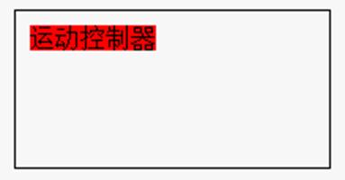
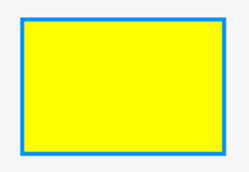

|
类型 |
显示指令 |
|
描述 |
指定之后draw指令使用的颜色，不设置颜色默认黑色。 此指令只能在自定义元件的绘图函数内使用，请查看自定义元件调用函数参考例程。 |
|
语法 |
SET_COLOR (cor[,backcor]) cor：线段颜色 backcor：DRAWTEXT 时的背景色，不填的时候为透明(-1) |
|
适用控制器 |
支持RTHmi |
|
例子 |
例一： SET_COLOR(RGB(255,255,255)) '设置颜色为白色
例二： SET_COLOR(RGB(0,0,0),RGB(255,0,0)) '颜色黑色，DRAWTEXT显示的字符串背景为红色。 DRAWRECT(0,0,200,100) '自定义元件内绘制边框 DRAWTEXT(10,10, "运动控制器") '自定义元件内显示字符串 
例三： SET_COLOR(RGB(0,150,255),RGB(255,255,0)) ‘蓝色线条，黄色填充背景 DRAWEX_RECT(50,50,200,150,0,1) ‘自定义元件内绘制填充矩形 DRAWEX_RECT(50,50,200,150,0) ‘自定义元件内绘制矩形边框  |
|
相关指令 |